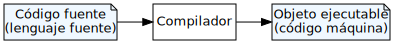
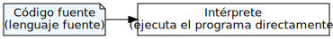

Lenguajes de programación
Ricardo Pérez López
IES Doñana, curso 2025/2026
1 Definición
1.1 Definición
Lenguaje de programación:
Un lenguaje de programación es un lenguaje formal que proporciona una serie de instrucciones que permiten a un programador escribir programas destinados a controlar el comportamiento físico y lógico de un ordenador.
Un programa es la codificación de un algoritmo en un lenguaje de programación.
Por tanto: cuando escribimos un algoritmo en un lenguaje de programación, obtenemos un programa.
Estos lenguajes están determinados por un conjunto de símbolos (llamado alfabeto), reglas gramaticales (léxico/morfológicas y sintácticas) y reglas semánticas, que en conjunto definen las estructuras válidas en el lenguaje y su significado.
Un lenguaje de programación viene definido por:
Sintaxis: la forma visible del lenguaje.
Semántica estática: las restricciones que tiene que cumplir un programa para que sea correcto aunque sea sintácticamente válido.
Semántica dinámica: el significado de cada construcción del lenguaje.
Biblioteca estándar: el conjunto de utilidades básicas que acompañan al lenguaje.
1.1.1 Sintaxis
A la forma visible de un lenguaje de programación se la conoce como sintaxis.
La sintaxis de un lenguaje de programación describe las combinaciones posibles de los símbolos que forman un programa sintácticamente correcto.
La sintaxis define dos elementos principales:
Los componentes léxicos, es decir, los elementos mínimos que forman un programa (palabras clave, números, identificadores, caracteres de puntuación como paréntesis o comas, etc…) y que representa el alfabeto de dicho lenguaje.
La estructura gramatical, es decir, cómo se pueden combinar los componentes léxicos para formar «frases» correctas según la sintaxis del lenguaje.
1.1.1.1 Notación EBNF
La sintaxis de los lenguajes de programación es definida generalmente utilizando:
Expresiones regulares (para los componentes léxicos)
Notación de Backus-Naur extendida (para la estructura gramatical)
Cada una de esas notaciones son formalismos usados para describir estructuras sintácticas en gramáticas formales.
Las expresiones regulares las estudiaremos a lo largo del curso, ya que resultan muy útiles para procesar cadenas.
Conocer la notación de Backus-Naur resulta de gran interés porque la mayoría de los lenguajes de programación la utilizan para documentar su sintaxis.
- Ejemplo:
y ⟨frase⟩)*
.⟨frase⟩ ::= ⟨sujeto⟩ ⟨predicado⟩
⟨sujeto⟩ ::= ⟨articulo⟩ ⟨sustantivo⟩ ⟨adjetivo⟩^+
⟨predicado⟩ ::= ⟨verbo⟩ [⟨adverbio⟩]
⟨artículo⟩ ::=
el |
la⟨sustantivo⟩ ::=
niño |
vaca⟨adjetivo⟩ ::=
grande |
azul⟨verbo⟩ ::=
come | salta
| corre⟨adverbio⟩ ::=
mucho |
poco- Cada regla sintáctica (llamada producción) está formada por dos partes separadas por ::= , donde a la izquierda hay un símbolo no terminal y a la derecha puede haber una lista de símbolos terminales y no terminales.
- Los nombres entre ángulos (como ⟨predicado⟩) se llaman símbolos no terminales.
- Los símbolos en negrita y azul (como
la) se llaman símbolos terminales. - La barra vertical | indica poder elegir entre dos opciones.
- El * indica 0, 1 ó más repeticiones de lo que acompaña.
- El ^+ indica 1 ó más repeticiones de lo que acompaña.
- Los corchetes [ y ] indican optatividad.
- Los paréntesis ( y ) agrupan varios elementos juntos.
Las gramáticas sirven para reconocer o producir frases correctas en un determinado lenguaje.
Por ejemplo, podemos preguntarnos si la frase «
el niño grande come mucho.» es sintácticamente correcta según la gramática anterior.Para ello, comprobamos si es posible derivar esa frase a partir de las producciones de la gramática, partiendo del símbolo inicial, que siempre es el primer símbolo no terminal que aparece en la gramática (en este caso, ⟨frases⟩).
Cada paso del procedimiento se llama derivación, y consiste en ir sustituyendo, de izquierda a derecha, los símbolos no terminales que vayamos encontrando por su correspondiente definición (lo que hay a la derecha del ::= ).
Iremos avanzando mientras encontremos símbolos terminales que coincidan con los de la frase.
El procedimiento finalizará con éxito cuando se acabe la frase, o con fracaso si algún símbolo terminal no coincide con el esperado.
En este caso:
⟨frases⟩
\Rightarrow ⟨frase⟩.
\Rightarrow ⟨sujeto⟩ ⟨predicado⟩.
\Rightarrow ⟨artículo⟩ ⟨sustantivo⟩ ⟨adjetivo⟩^+ ⟨predicado⟩.
\Rightarrowel⟨sustantivo⟩ ⟨adjetivo⟩^+ ⟨predicado⟩.
\Rightarrowelniño⟨adjetivo⟩^+ ⟨predicado⟩.
\Rightarrowelniñogrande⟨predicado⟩.
\Rightarrowelniñogrande⟨verbo⟩ [⟨adverbio⟩].
\Rightarrowelniñograndecome[⟨adverbio⟩].
\Rightarrowelniñograndecomemucho.El procedimiento ha tenido éxito, por lo que podemos afirmar que la gramática ha reconocido la frase, o que la frase satisface la gramática o que cumple con la gramática.
Eso se expresa diciendo que:
⟨frases⟩ \stackrel{\ast}{\Rightarrow}
el niño
grande come
mucho .
- Otra forma de representarlo es mediante un diagrama llamado árbol de análisis sintáctico.

el niño grande come mucho.»Ejercicios
Comprobar si son sintácticamente correctas las siguientes frases según la gramática anterior:
la vaca corre.la vaca grande salta.la vaca grande azul salta.el niño come.niño come.la niño grande salta poco.la vaca azul comeel niño grande salta poco y la vaca azul corre mucho.
¿Qué frases genera (o reconoce) la siguiente gramática? Poner ejemplos:
⟨expresión⟩ ::= ⟨átomo⟩ | ⟨lista⟩
⟨átomo⟩ ::= ⟨número⟩ | ⟨símbolo⟩
⟨lista⟩ ::=(⟨expresión⟩*)
⟨número⟩ ::= [+|-] ⟨dígito⟩^+
⟨símbolo⟩ ::= ⟨letra⟩^+
⟨dígito⟩ ::=0|1|2|3|4|5|6|7|8|9
⟨letra⟩ ::=a|b| … |z
1.1.2 Semántica estática
La semántica estática define las restricciones sobre la estructura de los textos válidos que resulta imposible o muy difícil expresar mediante formalismos sintácticos estándar como los que acabamos de ver.
Es decir: hay programas sintácticamente correctos que, sin embargo, no resultan ser programas válidos según las reglas de la semántica estática del lenguaje.
La semántica estática de un lenguaje está fuertemente relacionada con su sistema de tipos.
Por ejemplo:
Comprobar que los tipos de los datos a operar son los correctos:
Si intentamos hacer
4 + 'hola', sintácticamente puede ser correcto pero no tiene sentido sumar una cadena a un número.Comprobar que un nombre está ligado a un valor antes de usarlo en una expresión.
Sintácticamente puede ser correcto hacer
4 + x, pero si no se sabe qué esx, el programa no puede realizar la operación.Comprobar que el número y tipo de argumentos en la llamada a una función coincide con el número y tipo de parámetros de la función.
Si se quiere calcular el coseno de 24 se puede hacer
cos(24), pero no tiene sentido hacercos(24, 35)(se llama a la función con dos argumentos en vez de uno) ocos('hola')(se la llama con una cadena en lugar de un número).
En el ejemplo que vimos de los niños y las vacas, hemos encontrado frases sintácticamente correctas según la gramática pero que no son completamente correctas o lógicas.
Por ejemplo, la frase «
la niño grande salta poco.» es sintácticamente correcta (podemos derivarla a partir del símbolo inicial de la gramática), pero sabemos que no es completamente correcta porque no hay concordancia de género entre el artículolay el sustantivoniño.Ese error de concordancia es un error de semántica estática.
1.1.3 Semántica dinámica
La semántica dinámica (o simplemente semántica) de un lenguaje de programación expresa el significado de cada construcción del lenguaje.
Es un concepto muy complicado de formalizar y por ello se suele definir de manera informal en la documentación del lenguaje en función de los efectos que produce cada construcción del lenguaje dentro de un programa.
2 Evolución histórica
2.1 Evolución histórica
1804: El telar de Jacquard (Joseph Marie Jacquard)
- Tarjetas perforadas para controlar los diseños en los tejidos.
1837 – 1871: La máquina analítica (Charles Babbage)
En 1842, el matemático italiano Luigi Menabrea escribió una descripción de la máquina en frances.
En 1843, Ada Lovelace la traduce al inglés e incorpora unas anotaciones propias en las que especifica con detalle un método para calcular los números de Bernoulli con esa máquina. Por ello, se la considera la primera programadora de la historia.
1890: Máquinas tabuladoras electromecánicas (Herman Hollerith, Tabulating Machine Company)
- Hollerith está considerado el primer informático de la historia, por crear las primeras máquinas de procesamiento automático de la información.
- Con ellas se creó el censo de los EE.UU.
- Su empresa acabó llamándose IBM.
1936: El gran año de los modelos formales computacionales:
Cálculo lambda (Alonzo Church)
- Un modelo universal de computación basado en la abstracción y aplicación de funciones.
Máquinas de Turing (Alan Turing)
- Un modelo universal de computación basado en máquinas abstractas que manipulan símbolos escritos en una cinta de acuerdo a una serie de reglas definidas.
Sorpresa: ambos modelos son equivalentes.
El trabajo de Konrad Zuse:
1941: Ordenador Z3
El primer ordenador digital programable que realmente llegó a funcionar.
Por ello, Zuse es considerado el inventor del ordenador moderno.
1945: Ordenador Z4
El primer ordenador digital comercial del mundo.
Se vendió a varias universidades.
1948: Plankalkül
Considerado el primer lenguaje de programación.
Diseñado, pero no implantado en su época.
(Hasta aquí): Todo se programa en lenguaje máquina
1949: Lenguaje ensamblador (EDSAC)
Primeros Autocódigos:
1952: Autocódigo de Glennie (Alick Glennie, Universidad de Manchester)
1955: Autocódigo del Mark 1 (Ralph Anthony Brooker, Universidad de Manchester)
1957: Fortran (John Backus, IBM)
- El primer lenguaje de alto nivel de propósito general de uso masivo en tener una implementación funcional.
1958: LISP (John McCarthy, Instituto de Tecnología de Massachusetts)
Basado en el cálculo lambda.
Destinado al procesamiento simbólico y a la investigación en Inteligencia Artificial.
1958 – 1960: Familia de lenguajes ALGOL (Backus, Naur, Wijngaarden, Bauer, Perlis, McCarthy y otros):
1958: ALGOL 58
- Introdujo el concepto de bloque de código (sentencia compuesta).
1960: ALGOL 60
Influyó mucho en lenguajes posteriores.
Introdujo las funciones anidadas y el ámbito léxico.
1959: FLOW-MATIC (Grace Hopper, Remington Rand)
El primer lenguaje de alto nivel orientado a las aplicaciones de gestión.
El primero en usar sentencias y palabras en inglés.
1960: COBOL (Grace Hopper, Comisión CODASYL y Departamento de Defensa de los EE.UU.)
- Inspirado en FLOW-MATIC.
1962: Simula (Ole-Johan Dahl y Kristen Nygaard, Norwegian Computer Center)
- Considerado el primer lenguaje orientado a objetos.
1970: Pascal (Niklaus Wirth)
Lenguaje imperativo, procedimental, estructurado, pequeño, eficiente, heredero del ALGOL 60.
Muy usado en la enseñanza de la programación.
1972: Prolog (Alain Colmerauer, Universidad de Marsella)
- El primer lenguaje de programación lógica.
1972: C (Dennis Ritchie, Laboratorios Bell)
Lenguaje de nivel medio (de alto nivel pero con acceso directo a la máquina y al sistema operativo).
Lenguaje de sistemas
1975: Scheme (Gerald Jay Sussman, Guy L. Steele, Jr., MIT)
- Lenguaje funcional basado en LISP con ámbito léxico.
1978: ML (Robin Milner, Universidad de Edimburgo)
Lenguaje de programación funcional con sistema de tipos estático y polimórfico.
En realidad es una familia de lenguajes, entre los que se encuentran Standard ML, OCaml o F#.
1980: Smalltalk (Alan Kay, Adele Goldberg, Xerox PARC)
- Lenguaje orientado a objetos puro, reflexivo, con tipado dinámico, con un entorno propio de desarrollo y ejecución.
1985: C++ (Bjarne Stroustrup, Laboratorios Bell)
- Extensión orientada a objetos del lenguaje C.
1990: Haskell (Simon Peyton Jones, Paul Hudak, Philip Wadler y otros)
- Lenguaje funcional puro con evaluación no estricta y sistema de tipos polimórfico y fuertemente tipado.
1991: Python (Guido Van Rossum, CWI de Holanda)
- Lenguaje multiparadigma interpretado, dinámico y multiplataforma.
1995: Un año especialmente destacable:
Java (James Gosling, Sun Microsystems)
Lenguaje orientado a objetos, el más usado en la actualidad.
Genera código para una máquina virtual presente en millones de dispositivos en todo el mundo.
JavaScript (Brendan Eich, Netscape Communications)
Lenguaje multiparadigma, basado en prototipos e interpretado.
Usado como lenguaje cliente en los navegadores web.
PHP (Rasmus Lerdorf)
Lenguaje multiparadigma e interpretado.
Usado principalmente como lenguaje de servidor en aplicaciones web.
Ruby (Yukihiro Matsumoto)
- Lenguaje interpretado orientado a objetos puro.
2000: C# (Anders Hejlsberg, Microsoft)
- Lenguaje orientado a objetos para la plataforma .NET.
2003: Scala (Martin Odersky, Escuela Politécnica Federal de Lausana, Suiza)
- Lenguaje multiparadigma (funcional y orientado a objetos) para la máquina virtual de Java.
Swift, Kotlin, TypeScript, Julia, Go, Rust, Perl 6, Clojure…
Ejercicio
- Busca en Internet información sobre un lenguaje de programación que no se haya comentado aquí y que se haya creado no antes del año 2000. Anota el paradigma (o paradigmas) que soporta y los lenguajes que influyeron en su diseño.
3 Clasificación
3.1 Por nivel
Dependiendo del nivel del lenguaje de programación tenemos:
Lenguajes de bajo nivel
Lenguajes de alto nivel
3.1.1 Lenguajes de bajo nivel
Características:
Lenguajes basados en el paradigma imperativo.
Más cercanos a la máquina.
Con poca o nula capacidad de abstracción.
Se trabaja directamente con elementos propios del hardware del ordenador.
Atados a la arquitectura interna de la máquina para la que se programa.
Programas difíciles de escribir, depurar, mantener y portar.
Se consigue el máximo control del ordenador.
Principales ejemplos:
Código máquina
Ensamblador
3.1.2 Lenguajes de alto nivel
Características:
Lenguajes que pueden estar basados en cualquier paradigma, aunque la tendencia es que sean cada vez más declarativos.
Más cercanos al ser humano.
Mayor capacidad de abstracción.
Independiente de la arquitectura y los detalles internos del ordenador o el sistema operativo.
Programas más fáciles de escribir, depurar, mantener y portar.
Menor control de los recursos de la máquina.
Ejemplos de lenguajes de alto nivel:
- Fortran
- LISP
- COBOL
- BASIC
- Pascal
- C
- Java
- Ruby
- C++
- Python
- JavaScript
- C#
- PHP
- Haskell
Ejercicio
- Ordena cronológicamente la lista anterior por el año de creación de cada lenguaje.
3.2 Por generación
Primera generación: Se programa directamente en código máquina.
Segunda generación: Aparece el lenguaje ensamblador como un lenguaje simbólico que se traduce a lenguaje máquina usando un programa ensamblador.
Tercera generación: Aparecen los lenguajes de alto nivel con los que se puede programar con códigos independientes de la máquina. El código fuente se traduce a código máquina usando programas específicos llamados traductores.
Cuarta generación: Herramientas que combinan un lenguaje de programación de alto nivel con un software de generación de pantallas, listados, informes, etc. orientado al desarrollo rápido de aplicaciones. Ejemplos característicos son los lenguajes de programación visual.
Quinta generación: Es una denominación que se usó durante un tiempo para los lenguajes de programación de muy alto nivel (funcional y lógicos) destinados principalmente a resolver problemas de Inteligencia Artificial, pero como término ya ha caído en desuso.
3.3 Por propósito
Dependiendo del tipo de programa que podemos escribir con el lenguaje, tenemos:
Lenguajes de propósito general: Con ellos se pueden escribir programas muy diversos. No están atados a un tipo concreto de problema a resolver. Ejemplos:
- LISP, Pascal, C, Java, Ruby, C++, Python, C#, Haskell…
Lenguajes de propósito específico: Son lenguajes mucho más especializados y destinados principalmente a resolver un tipo determinado de problema. No sirven para escribir cualquier tipo de programa pero, dentro de su ámbito de actuación, suelen funcionar mejor que los lenguajes de propósito general. Ejemplos:
Lenguajes de consulta a bases de datos (SQL)
Lenguajes de descripción de hardware (VHDL)
Lenguajes para desarrollo de aplicaciones de gestión (COBOL)
3.4 Por paradigma
Dependiendo del paradigma de programación que soporta el lenguaje, podemos encontrar:
Lenguajes imperativos
Lenguajes funcionales
Lenguajes orientados a objetos
Lenguajes lógicos
Lenguajes dirigidos por eventos
Lenguajes multiparadigma
4 Traductores e intérpretes
4.1 Traductores
El único lenguaje que entiende la máquina directamente es el lenguaje máquina o código máquina, que es un lenguaje de bajo nivel.
Para poder programar con un lenguaje de alto nivel, necesitamos usar herramientas software que traduzcan nuestro programa al lenguaje máquina que entiende el ordenador.
Estas herramientas software son los traductores.
Traductor:
Es un software que traduce un programa escrito en un lenguaje a otro lenguaje, conservando su significado.
El traductor transforma el programa fuente (o código fuente) en el programa objeto (o código objeto).
El código fuente está escrito en el lenguaje fuente (que generalmente será un lenguaje de alto nivel).
El código objeto está escrito en el lenguaje objeto (que generalmente será código máquina).
Durante el proceso de traducción, el traductor también informa al programador de posibles errores en el código fuente.
4.2 Compiladores
Definición:
Compilador:
Es un traductor que convierte un programa escrito en un lenguaje de más alto nivel a un lenguaje de más bajo nivel.
Generalmente, el lenguaje objeto suele ser código máquina y el resultado de la compilación es un objeto ejecutable directamente por la máquina.

4.2.1 Ensambladores
Un caso particular de compilador es el ensamblador:
Ensamblador:
Es un compilador que traduce un programa escrito en lenguaje ensamblador a código máquina.
Muchas veces, los compiladores se construyen en cadena: en lugar de generar código máquina directamente, generan código ensamblador que sirve de entrada a un programa ensamblador que generará el código objeto final.

4.3 Intérpretes
Un intérprete es un caso muy especial de traductor.
En lugar de generar código objeto, el intérprete lee el código fuente y lo ejecuta directamente, reconociendo y ejecutando sus instrucciones una por una hasta que se acaba el programa.
El intérprete funciona, por tanto, como un emulador de una máquina que entendiera directamente el lenguaje de alto nivel en el que está escrito el programa fuente. Esa máquina no existe físicamente, y por eso decimos que es una máquina abstracta, para distinguirla de la real.

- En rigor, como los intérpretes no generan código objeto, no podríamos considerarlos traductores, sino que más bien entran dentro de la categoría más general de procesadores de lenguajes.
Un intérprete está formado por un analizador y un emulador:
El analizador traduce todo el código fuente a una representación interna llamada árbol sintáctico (que no hay que confundir con el árbol de análisis sintáctico).
Ese árbol sintáctico no se vuelca directamente a la salida, sino que es consumida directamente por el emulador.
El emulador se encarga de recorrer el árbol sintáctico y de ir ejecutando las instrucciones que éste representa, llevando a cabo las acciones que correspondan dependiendo de la instrucción que sea.
Para ello, tiene que ir traduciendo sobre la marcha, instrucción por instrucción, las acciones a realizar sobre la máquina abstracta en acciones a realizar sobre la máquina real.
Programar con un intérprete es una tarea más rápida de realizar que con un compilador, ya que, para poder ejecutar el programa, no hace falta compilar ni generar el código objeto, por lo que se evita dar un paso que en muchos casos puede llegar a consumir mucho tiempo.
Por la misma razón, a muchos programadores les resulta más cómodo y fluido programar usando un intérprete (aunque con los modernos entornos de desarrollo esto ya no supone tanta diferencia como antes).
Sin embargo, si el programa fuente tiene errores sintácticos (o ciertos errores de semántica estática), el intérprete no informará de ellos hasta el momento en el que intente ejecutar la instrucción errónea.
Es decir: esos errores se detectarán y se mostrarán en tiempo de ejecución, no en tiempo de compilación.
Por tanto, muchos errores que pueden ser detectados por un compilador sólo se podrán detectar cuando ya se esté ejecutando el programa, lo que hace que el coste (en tiempo y dinero) de corregir el error sea mucho mayor.
Además, los programas interpretados suelen ser varias veces más lentos que los compilados, ya que:
hay que ir recorriendo continuamente el árbol sintáctico para encontrarse con las instrucciones que allí aparecen, lo que consume tiempo y memoria;
hay que traducir las instrucciones de la máquina abstracta a instrucciones de la máquina real, cosa que no se hace de una vez y para siempre, sino que se va haciendo poco a poco a medida que se va encontrando con una nueva instrucción al recorrer el árbol sintáctico.
En cambio, un compilador traduce todas las instrucciones de una vez y sólo una vez, de forma que, al ejecutarlas, ya están todas traducidas al lenguaje objeto, formando el código objeto.
Hay lenguajes compilados y lenguajes interpretados, e incluso lenguajes que son ambas cosas (tienen compiladores e intérpretes).
4.3.1 Interactivos (REPL )
A los intérpretes que hemos visto hasta ahora se les denomina intérpretes por lotes, ya que tratan al programa fuente como un lote de instrucciones conjuntas.
A diferencia de los anteriores, los intérpretes interactivos son programas que solicitan al programador que introduzca por teclado, una a una, las instrucciones que se desean ejecutar, y el intérprete las va ejecutando a medida que el programador las va introduciendo.
Su comportamiento se resume en el siguiente bucle:
Leer la siguiente instrucción por teclado (Read).
Ejecutar o evaluar la instrucción (Eval).
Imprimir por la pantalla el resultado (Print).
Repetir el bucle (Loop).
Los compiladores son ideales para:
Desarrollar aplicaciones que demanden altas prestaciones y que necesiten sacar el máximo rendimiento de la máquina.
Acceder a los recursos de la máquina al más bajo nivel.
Los intérpretes por lotes son ideales para:
Desarrollo rápido de aplicaciones.
Escribir programas que requieran portabilidad, es decir, que el programa se pueda ejecutar en varias plataformas diferentes.
Escribir programas sencillos y rápidos que resuelvan tareas concretas.
Los intérpretes interactivos son ideales para:
Aprender conceptos de programación.
Experimentar con el lenguaje.
Probar rápidamente el efecto de una instrucción.
5 Entornos integrados de desarrollo
5.1 Definición
Definición:
Un entorno integrado de desarrollo o IDE (del inglés, Integrated Development Environment), es una herramienta software que proporciona servicios que facilitan el desarrollo de software al programador.
Está formado por un editor de textos donde el programador puede codificar el programa en el lenguaje de programación correspondiente, alrededor del cual pueden orbitar una serie de herramientas satélite, como:
- Herramientas visuales para la creación de interfaces gráficas de usuario
- Sistemas de control de versiones
- Visor de documentación
- Intérpretes interactivos
Asimismo, el editor de textos del IDE suele incorporar facilidades que ayudan a escribir código con más comodidad:
Resaltado de sintaxis
Autocompletado de código
Ayudas a la refactorización
Los IDE suelen ir asociados a un lenguaje o grupo de lenguajes de programación concreto y, por lo tanto, son herramientas especializadas utilizadas para programar en el lenguaje o lenguajes para los que han sido diseñadas. Por ejemplo:
PyCharm es un IDE para programar en el lenguaje Python.
IntelliJ IDEA es un IDE para programar en el lenguaje Java.
5.2 Editores de textos
Un editor de textos, por contra, es una herramienta software que, en principio, sólo cuenta con la posibilidad de editar texto «plano» cuyo contenido puede ser de cualquier tipo (no necesariamente un código fuente).
Al ser una herramienta general, no dispone de características específicas para escribir programas.
Los principales editores de textos que podemos encontrar en el mercado son:
- Vim
- Emacs
- Atom
- Sublime Text
- Visual Studio Code
5.2.1 Editores vs. IDE
Los mejores editores de textos son extensibles, es decir, es posible ampliar su funcionalidad por medio de extensiones.
Esto hace que podamos personalizar su aspecto y funcionalidad hasta crear con ellos un IDE completo y ajustado a nuestras necesidades.
Gracias a ello, podemos usar el mismo editor de textos tanto para crear documentos de texto genéricos como para escribir programas. Por tanto, sólo tenemos que aprender el manejo de una única herramienta.
No obstante, los IDE suelen incorporar modos de funcionamiento que imitan a los de los editores de textos más conocidos (como Vim o Emacs).
5.2.2 Thonny
Es el IDE que vamos a usar en clase.
Es software libre, y por tanto podemos usarlo sin ningún tipo de restricción.
Además, está pensado para el principiante y proporciona una serie de ayudas pedagógicas muy interesantes para el que está aprendiendo Programación.
Una vez estemos familiarizados con su entorno, podremos pasar a otras herramientas más usadas en la industria y más flexibles como Visual Studio Code, Spyder o PyCharm.
6 El lenguaje de programación Python
6.1 Historia
Python fue creado a finales de los ochenta por Guido van Rossum en el Centro para las Matemáticas y la Informática (CWI, Centrum Wiskunde & Informatica), en los Países Bajos, como un sucesor del lenguaje de programación ABC.
El nombre del lenguaje proviene de la afición de su creador por los humoristas británicos Monty Python.

Python alcanzó la versión 1.0 en enero de 1994.
Python 2.0 se publicó en octubre de 2000 con muchas grandes mejoras. Actualmente, Python 2 está obsoleto.
Python 3.0 se publicó en septiembre de 2008 y es una gran revisión del lenguaje que no es totalmente retrocompatible con Python 2.
6.2 Características principales
Python es un lenguaje interpretado, de tipado dinámico y multiplataforma, cuya filosofía hace hincapié en una sintaxis que favorezca un código legible.
Es un lenguaje de programación multiparadigma. Esto significa que más que forzar a los programadores a adoptar un estilo particular de programación, permite varios estilos: programación orientada a objetos, programación estructurada y programación funcional.
Es administrado por la Python Software Foundation y posee una licencia de software libre.
La estructura de un programa se define por su anidamiento.
Tiene una gran biblioteca estándar, usada para una diversidad de tareas. Esto viene de la filosofía «pilas incluidas» (batteries included) en referencia a los módulos de Python.
La biblioteca estándar de Python es el conjunto de módulos y paquetes que vienen incluidos por defecto con la instalación de Python, sin necesidad de instalar nada adicional.
Estos módulos proporcionan herramientas ya hechas para realizar tareas comunes, de forma que no tengas que reescribirlas desde cero.
Por ejemplo, en la biblioteca estándar podemos encontrar:
Manipulación del sistema y del intérprete.
Estructuras de datos y utilidades.
Fechas, horas y calendarios.
Archivos y directorios.
Internet y protocolos.
Compresión y formatos.
Manejo de datos estructurados.
Matemáticas y estadística.
Seguridad y cifrado.
En resumen, la biblioteca estándar de Python es como una «caja de herramientas oficial» que cubre la mayoría de las necesidades básicas y medias de un programa. Gracias a ella, muchas veces podemos resolver problemas sin instalar bibliotecas externas ni crear el código nosotros.
6.3 Instalación
Instalación en Debian GNU/Linux:
Python 3 ya viene instalado en Debian, pero es conveniente ejecutar los siguientes comandos desde un terminal del sistema operativo:
Al acabar, cerrar la sesión con el sistema operativo y abrir una nueva antes de continuar.
Asimismo, es conveniente instalar algunos paquetes adicionales, aunque no son obligatorios:
Instalación en Windows:
Visitar https://www.python.org/downloads/windows y descargar desde ahí la última versión estable.
Durante la instalación, marcar la casilla que activa la opción de añadir comandos al PATH.
6.4 Funcionamiento del intérprete
El intérprete de Python tiene dos modos de funcionamiento:
Modo interactivo (REPL): se abre una sesión interactiva con el intérprete donde éste nos solicita que introduzcamos una instrucción (sentencia o expresión) y, a continuación, la ejecuta inmediatamente, para luego volver a solicitar una nueva instrucción, repitiendo este ciclo indefinidamente en un diálogo continuo entre el programador y el intérprete.
Es el modo más apropiado para aprender el lenguaje o hacer pruebas rápidas, y el que empezaremos a usar nosotros.
Modo por lotes: el intérprete ejecuta un programa previamente escrito por el programador y almacenado en archivos fuente (llamados scripts) que contienen instrucciones que el intérprete va ejecutando una tras otra.
Es el modo que utilizan los usuarios para ejecutar los programas previamente confeccionados por los programadores.
6.4.1 Entrar y salir del intérprete interactivo
Para entrar en el intérprete interactivo, se usa el comando
pythondesde la línea de órdenes del sistema operativo:$ python Python 3.13.3 (main, Apr 10 2025, 21:38:51) [GCC 14.2.0] on linux Type "help", "copyright", "credits" or "license" for more information. >>>El mensaje que obtengamos puede que no sea exactamente igual, pero es importante comprobar que estamos usando Python 3 y no 2.
Para salir, se pulsa
Ctrl+Den Ubuntu oCtrl+Zen Windows.El
>>>es el prompt del intérprete de Python, desde el que se ejecutan las expresiones y sentencias que tecleemos: